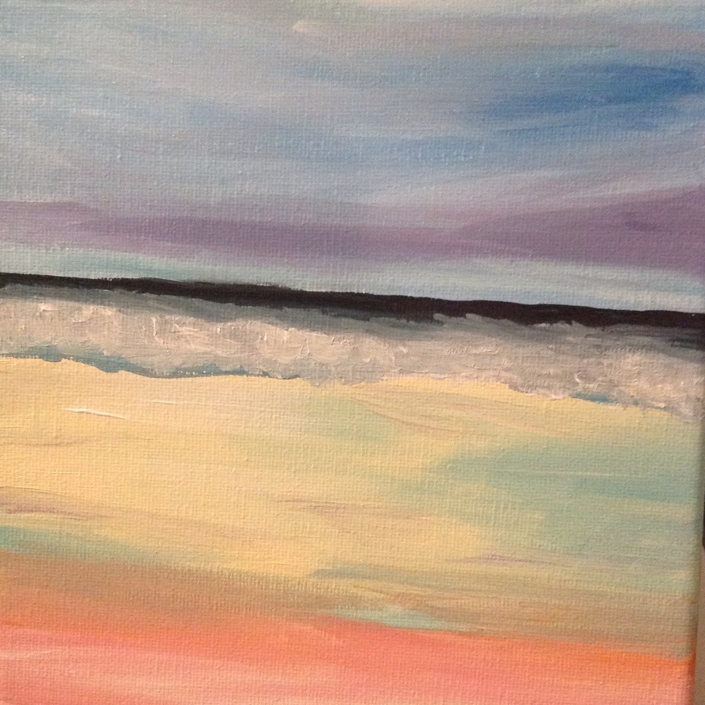
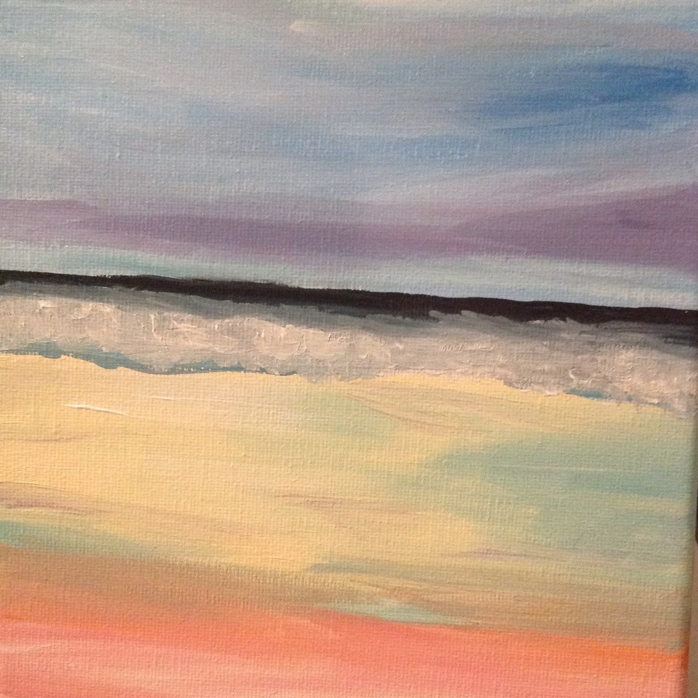

Hobbies
1. Painting
I’ve always liked art, but it wasn’t until I went to a Wine and Canvas class for a friend’s birthday that I really started painting as a hobby. Now, I enjoy painting whenever I have free time. I primarily work with acrylic paint, but I occasionally use watercolor as well. Painting is a good hobby because it is somehow simultaneously fun, relaxing, and challenging. On top of that it’s a cheap way to decorate your house!
 


2. Traveling
I really enjoy traveling and though I don’t get to travel very often,
I have been lucky enough to have seen some truly amazing places. My most memorable trips include
Hawaii, Alaska, and Europe. Locations pictured below (from right to left):
Baltimore, Md
King's Wharf, Bermuda
The Homestead, Hot Springs, VA
Cozumel, Mexico.